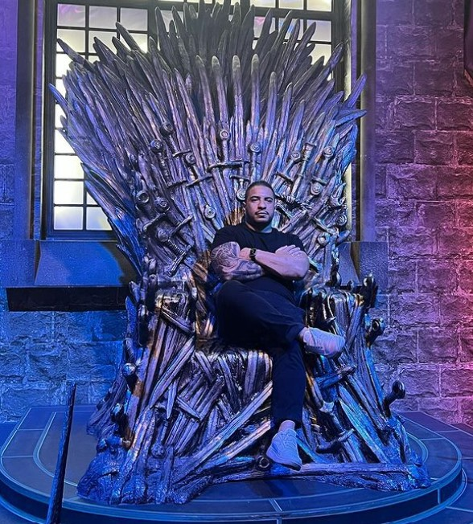

Fala galera! üéâ
Eu (Rodrigo) estou fazendo aniversário e quero celebrar com todo mundo em grande estilo. Vai rolar um CHURRASCO top, com muito carne, cerveja e diversão! üçñüç∫
Começa às 21h e vai até quando der, então já sabe, chega com energia porque a festa vai ser longa e animada!
E não esquece de trazer as bebidas de sua prefer√™ncia üçªü•§ (me avisa se voc√™ for trazer algo diferente, ok?).
Nos vemos lá para fazer aquele churras e curtir a noite! üòéüî•
Vamos fazer uma festa daquelas! üéâüî•